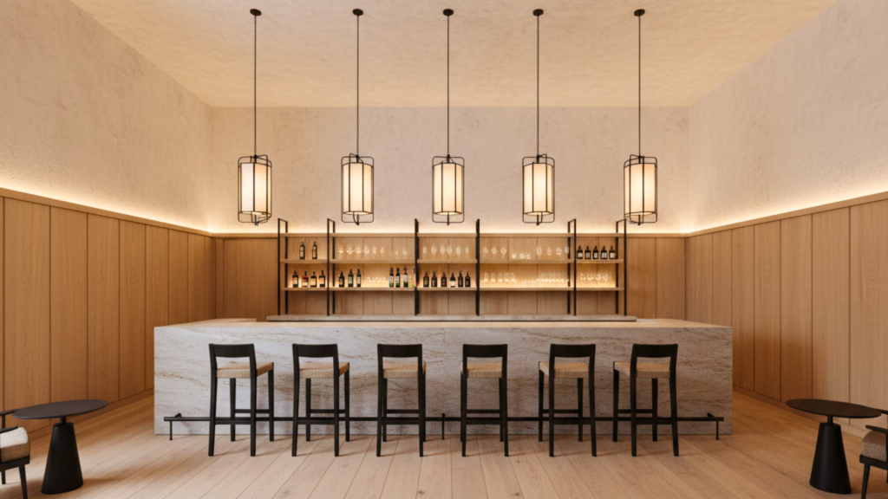
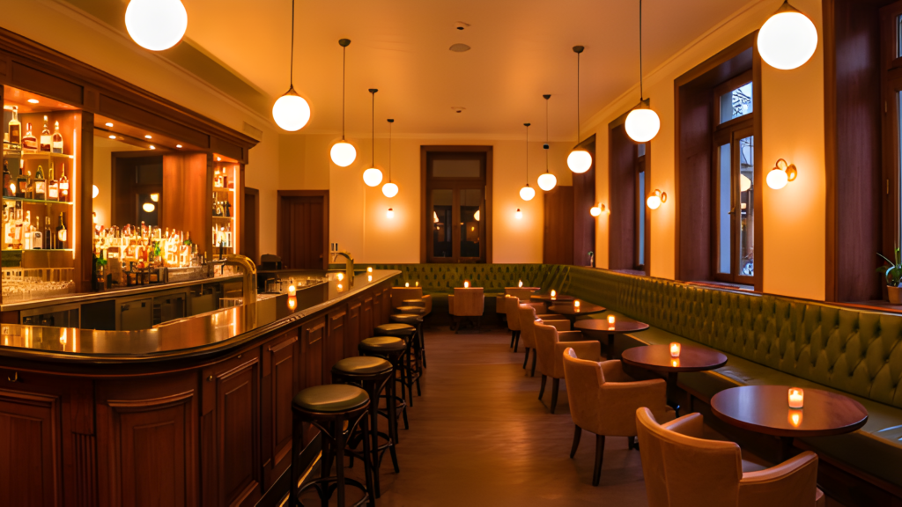
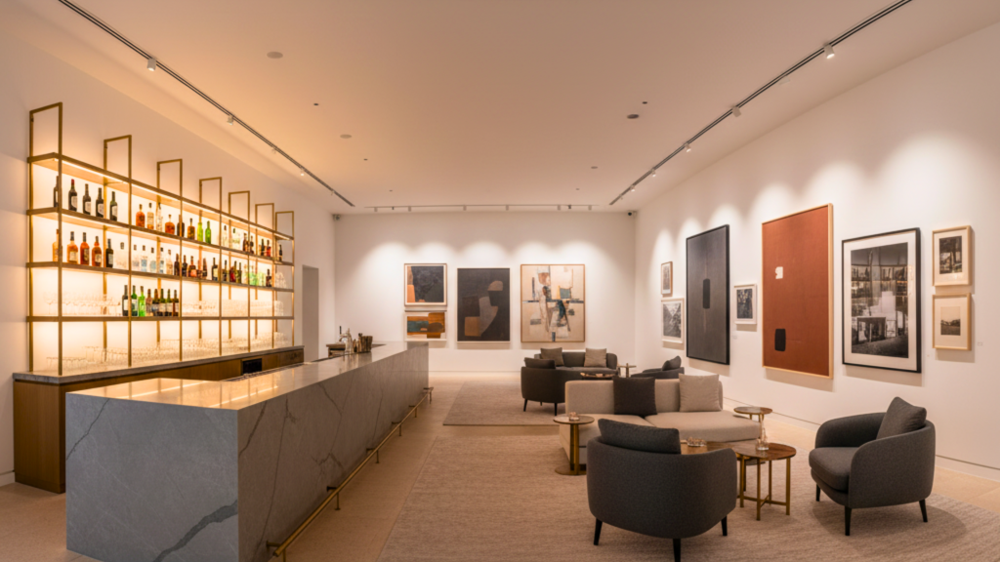

Designing a luxury bar in 2025 is about more than just creating a beautiful space — it’s about crafting an experience. From material choices to mood lighting, every detail speaks to a new generation of patrons who seek sensory indulgence, personalization, and purpose in design.
Here are the top interior design trends redefining luxury bars in 2025 — where sophistication meets storytelling.
1. Neo-Decadence: The Return of Opulence, Redefined

Forget minimalism — 2025 is welcoming neo-decadence, where luxury meets restraint. Plush velvets, rich marbles, brushed brass, and statement chandeliers are making a comeback, but with a modern twist.
The difference? Designers are pairing ornate materials with clean silhouettes, allowing textures and lighting to do the talking. A deep emerald or plum velvet paired with sleek black metal instantly elevates a bar’s ambience without overwhelming the senses.
2. Mood Lighting as the Main Character

Lighting in 2025’s luxury bars is not just functional — it’s emotional. Expect programmable lighting systems that adapt to the mood, time, and music.
Warm, diffused lighting near seating zones and focused accent lighting on bottles or bar counters enhance intimacy. The latest trend? Backlit translucent materials like onyx or alabaster that glow gently, creating a hypnotic effect.
3. Biophilic Sophistication
Sustainability continues to shape luxury design. The biophilic bar trend integrates nature not just through plants, but through organic materials, earthy palettes, and natural textures.
Think moss walls, stone counters, rattan panels, and warm wooden tones that soften the drama of metallic accents. These natural elements bring balance and calm — turning high-energy spaces into immersive, soulful retreats.

4. Art-Led Interiors
In 2025, bars double as art galleries. Sculptural lighting, large-format digital art, and installations blur the line between hospitality and culture.
Designers are curating spaces where every corner sparks conversation. Statement murals, kinetic art, and AI-generated visuals are all becoming part of the luxury bar vocabulary — a way to attract the Instagram generation while offering visual depth.

5. Curved Lines and Fluid Layouts
Harsh angles are out; soft curves and fluid forms are in. From rounded bar counters to cocoon-like seating booths, these organic shapes invite relaxation and flow.
This design trend is not just aesthetic — it’s psychological. Curved layouts subconsciously make spaces feel more welcoming and social, ideal for guests who value both privacy and connection.

6. The Rise of Experiential Design
Luxury today is about experience over excess. 2025’s best bars focus on multi-sensory storytelling — immersive music systems, scent diffusers, and even kinetic lighting synced with beats.
Some bars are even introducing interactive tasting zones or chef’s cocktail tables, allowing guests to witness craftsmanship up close.

7. Tech-Integrated Luxury
From AI-powered lighting to smart climate controls and automated mixology, technology is seamlessly woven into design. Invisible tech integration ensures the bar remains aesthetically timeless while offering futuristic functionality.
Touchless taps, digital wine menus, and motion-activated lighting make luxury feel effortless and intuitive.

8. Heritage Modernism
A rising trend in luxury bar design for 2025 is honoring local heritage with modern expression. Designers are blending regional craftsmanship—like hand-carved wood, artisanal tiles, or traditional motifs—with sleek, modern finishes.
This results in interiors that feel authentic, rooted, and globally relevant all at once.
Final Sip
The luxury bar design trends for 2025 mark a shift from surface-level glam to immersive sophistication. It’s not about gold-plated finishes anymore — it’s about emotion, experience, and essence.
Whether you’re designing a speakeasy, rooftop lounge, or contemporary cocktail bar, the goal is clear: craft spaces that tell stories worth remembering.
Pan-India presence | 3500+ F&B spaces delivered — Visit SprintCo’s Website